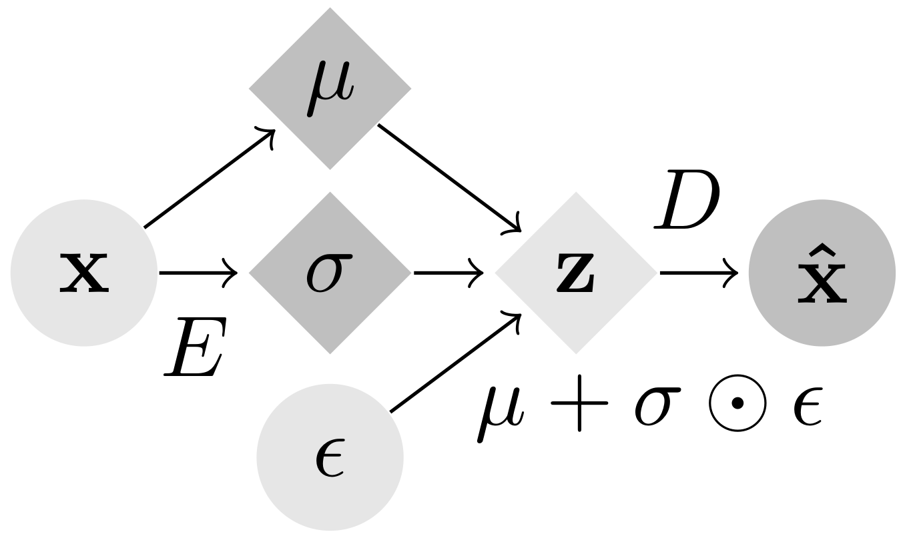
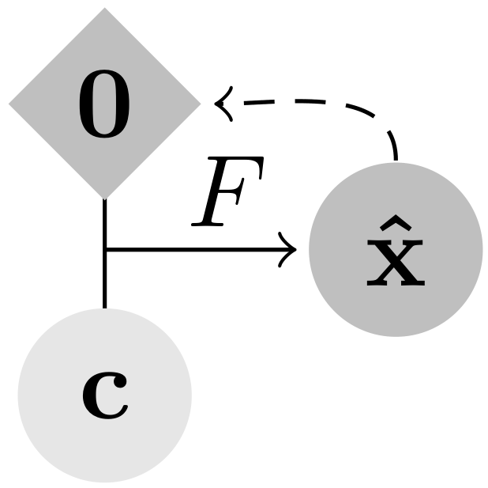

Gradient Origin Networks
Abstract This paper proposes a new type of generative model that is able to quickly learn a latent representation without an encoder. This is achieved by initialising a latent vector with zeros, then using gradients of the data fitting loss with respect to this zero vector as new latent points. The approach has similar characteristics to autoencoders but with a simpler naturally balanced architecture, and is demonstrated in a variational autoencoder equivalent that permits sampling. This also allows implicit representation networks to learn a space of implicit functions without requiring a hypernetwork, retaining their representation advantages with fewer parameters.
Approach
Gradient Origin Networks (GONs) are comparable to Variational Autoencoders in that both compress data into latent representations and permit sampling in a single step. However, GONs use gradients as encodings meaning that they have a simpler architecture with only a decoder network:
|  |  |
| Variational Autoencoder | Gradient Origin Network |
In Gradient Origin Networks, unknown parameters in the latent space are initialised at the origin, then the gradients of the data fitting loss with respect to these points are used as the latent space. This process is jointly optimised with the reconstructed data, by minimising the GON loss function:

At inference, the latent vector can be sampled in a single step without requiring iteration. Here are some random spherical interpolations showing this:
| MNIST | FashionMNIST | COIL20 |
In practice, we find GONs to be parameter-efficient and fast to train. For more details, please read the paper in the link above.
Conclusion We have proposed a new type of generative model that captures the dataset without requiring an encoder. By initialising a latent vector of our unknown parameters with zeros, we have shown that it is possible to compute the gradients of the data fitting loss with respect to this origin, and then jointly fit the data while learning this new point of reference in the latent space. The results show this approach is able to represent datasets using a small number of parameters with a simpler architecture, which has advantages in applications such as implicit representation networks.
Citation
@article{bondtaylor2020gradient,
title={Gradient Origin Networks},
author={Sam Bond-Taylor and Chris G. Willcocks},
journal={arXiv preprint arXiv:2007.02798},
year={2020}
}